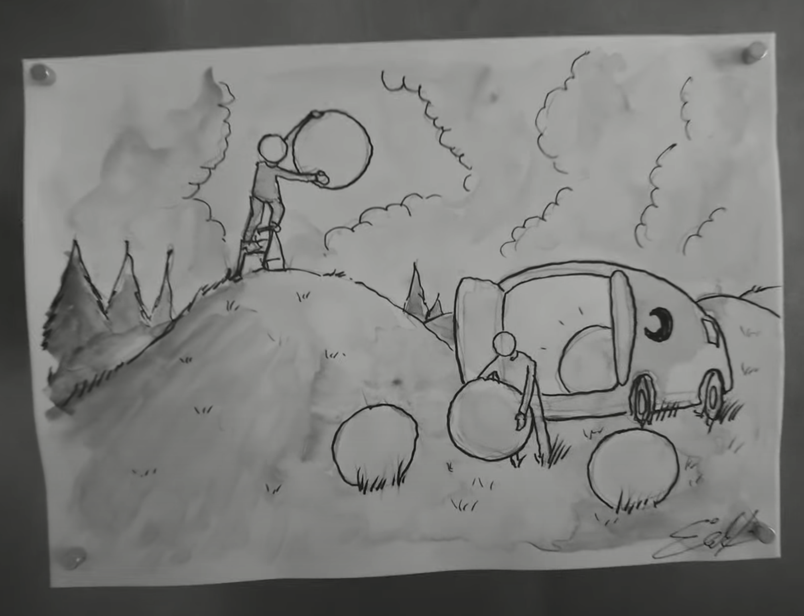
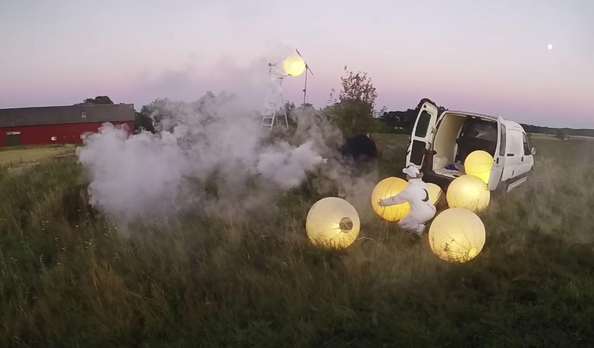
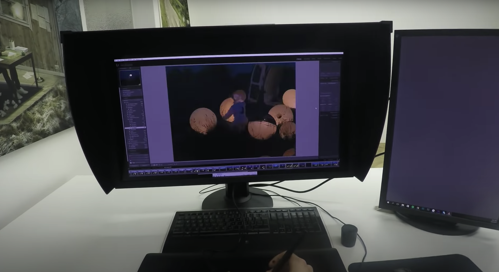
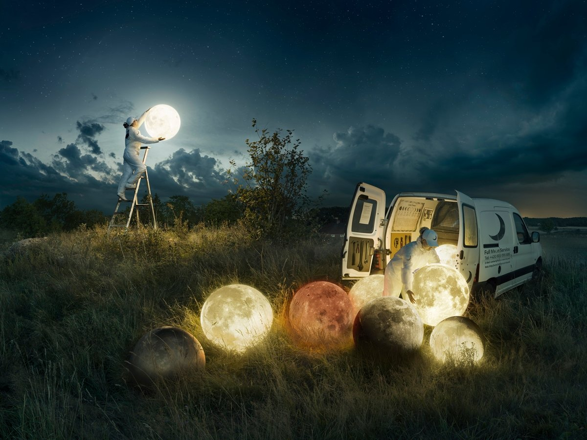

아이디어 및 기획
 1 ~ 12개월
1 ~ 12개월
아이디어의 첫번째 씨앗은 일반적으로 자연스럽게 생각나며 에릭은 이를 메모하고 스케치한다.
그리고 한동안, 때로는 몇달동안이나 동명상태로 존재한다.
그러다가 다른 프로젝트 열중하지 않고 있을 때 갑자기 아이디어가 떠오르면 충동적으로 일을 시작한다.
1 ~ 12개월아이디어의 첫번째 씨앗은 일반적으로 자연스럽게 생각나며 에릭은 이를 메모하고 스케치한다.
그리고 한동안, 때로는 몇달동안이나 동명상태로 존재한다.
그러다가 다른 프로젝트 열중하지 않고 있을 때 갑자기 아이디어가 떠오르면 충동적으로 일을 시작한다.


이미지 프로세스
 1 ~ 6개월, 실제 작업에 필요한 시간은 20시간
1 ~ 6개월, 실제 작업에 필요한 시간은 20시간
한 작품을 만드는데 약 150개 이상의 레이어가 사용된다.
작업이 6개월 이상 걸리기도 하는데, 그 이유는 자신의 사진을 객관적인 눈으로 보기 위해
오랜시간 사진을 머릿속에서 잊어버리기기 위해 노력하기 때문이다.
1 ~ 6개월, 실제 작업에 필요한 시간은 20시간한 작품을 만드는데 약 150개 이상의 레이어가 사용된다.
작업이 6개월 이상 걸리기도 하는데, 그 이유는 자신의 사진을 객관적인 눈으로 보기 위해
오랜시간 사진을 머릿속에서 잊어버리기기 위해 노력하기 때문이다.

작품 발표
 최종발표는 디지털 매체를 통해 이루어지며 이를 통해 작품에 대한 피드백을 구한다.
최종발표는 디지털 매체를 통해 이루어지며 이를 통해 작품에 대한 피드백을 구한다.
그리고 반응을 취합하고 이를 반영한 후 최종버전을 자신의 공식 웹사이트에 공개한다.
공식 웹사이트
최종발표는 디지털 매체를 통해 이루어지며 이를 통해 작품에 대한 피드백을 구한다. 그리고 반응을 취합하고 이를 반영한 후 최종버전을 자신의 공식 웹사이트에 공개한다.
공식 웹사이트
